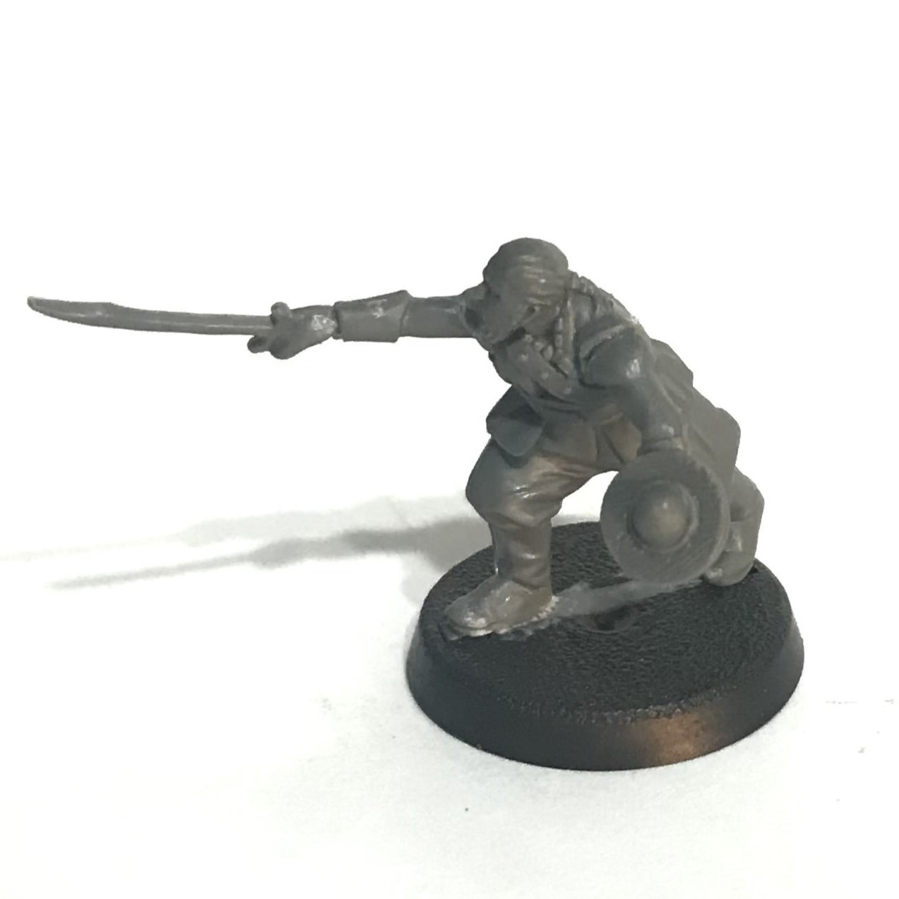
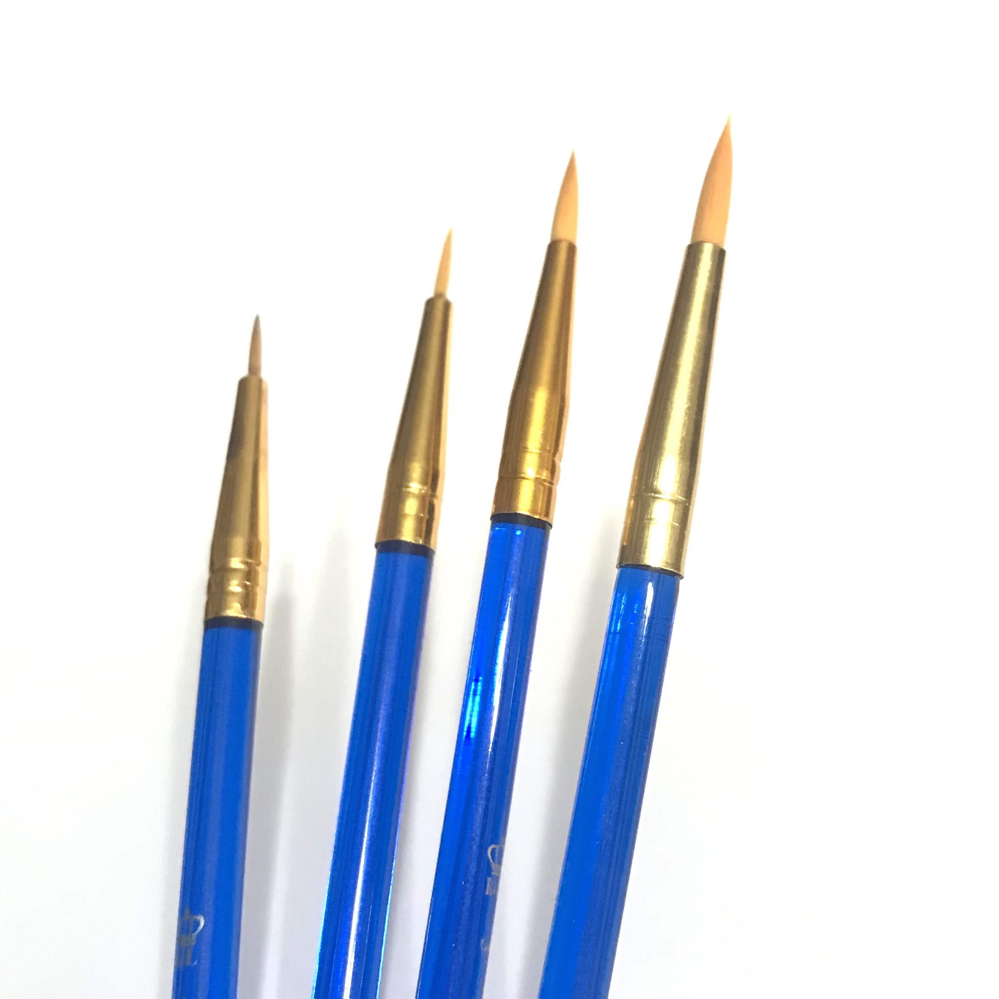

Getting Started
When starting out in any hobby, the sheer amount of products, options, opinions, and approaches can be daunting. Miniature painting and tabletop wargaming is no different. There are dozens of games, hobbying products, tutorials, and techniques out there. As overwhelming as it can be, it is sometimes helpful to take a step back. The first step is deciding what you want to achieve. Are you wanting to master your painting skills? Do you want to paint fast, or spend hours meticulously pouring over every detail? Would you be happy just having something painted and on the table? The most important part is focusing on whatever brings you the most enjoyment. Remember, this is a hobby, it’s supposed to be fun! No matter what level you want to paint at, you’ll need to learn the basics first.
Supplies
1. Miniatures
The first thing you’ll need might seem obvious: A miniature to paint! (You’d look a little silly painting thin air) Find a model that interests you in some way. This could be a favorite character, a start to an army, or just a cool looking mini. My first miniatures were from the Lord of the Rings universe, as it’s one of my all-time favorite trilogies!
2. Tools
Next you’ll need tools to assemble and prepare the miniature for painting. Miniatures typically come on sprues, so you’ll need a way to cut the bits out. You can use special clippers or a hobby knife. I prefer a sharp hobby knife, as you can get much cleaner cuts against the model’s surface. You’ll also need an adhesive to assemble the miniature. Plastic cement is a popular option, but I prefer Loctite gel control superglue.
The last component you’ll need to finish prepping your miniature is a way to prime it. The easiest method for a beginner is using a rattle can from the hardware store. I like to prime with Rustoleum flat black, but their flat gray provides a more universal and forgiving base for your paint.
3. Paints
You’ll also need some paints(they’re kind of important). Miniatures are most commonly painted with acrylics. Because of the size of miniatures, it is important to use paints meant for miniatures. A very fine pigment in the paints is needed to avoid losing details. Each brand has their own pros and cons. I started out using Army Painter, because of their lower price point. I still use many of their paints, but I also use a combination of other brands, such as Citadel and Vallejo. As you experiment with different brands, you’ll find specific colors and attributes you prefer from each. When it comes to paints, brand loyalty is silly. You will often achieve the best results by mixing and matching. As a beginner, I would recommend an inexpensive starter set like this one from Army Painter. Anything with decent color variety and a few shader/wash paints will make for a good starting point.

4. Brushes
Brushes are a big part of painting. A lot of paints can be hard on brushes, so I prefer to use cheap multipacks of acrylic brushes from Walmart. I find that knowing I can easily replace my brushes keeps fear of destroying them from limiting my creativity. You’ll also want some paper towel and a water cup to rinse brushes in. To avoid damaging the brushes, NEVER leave them in the cup. You’ll want to keep the point on the brush as long as possible.
Setup
The last thing to mention before you jump in is your actual painting area. There are a few key things you want in a basic setup. First, you want to have good lighting. If you can’t see what you’re painting, you’re gonna have trouble with all the details and colors. You’ll also want a placemat of some sort to protect the surface you’re painting on, and some sort of paint palette. You can get one in most art supply sections, or just use a scrap of cardboard. As you progress and experiment with your supplies and setup, you will find your own preferences. Fine-tuning this can be ongoing, but these are good starting points.